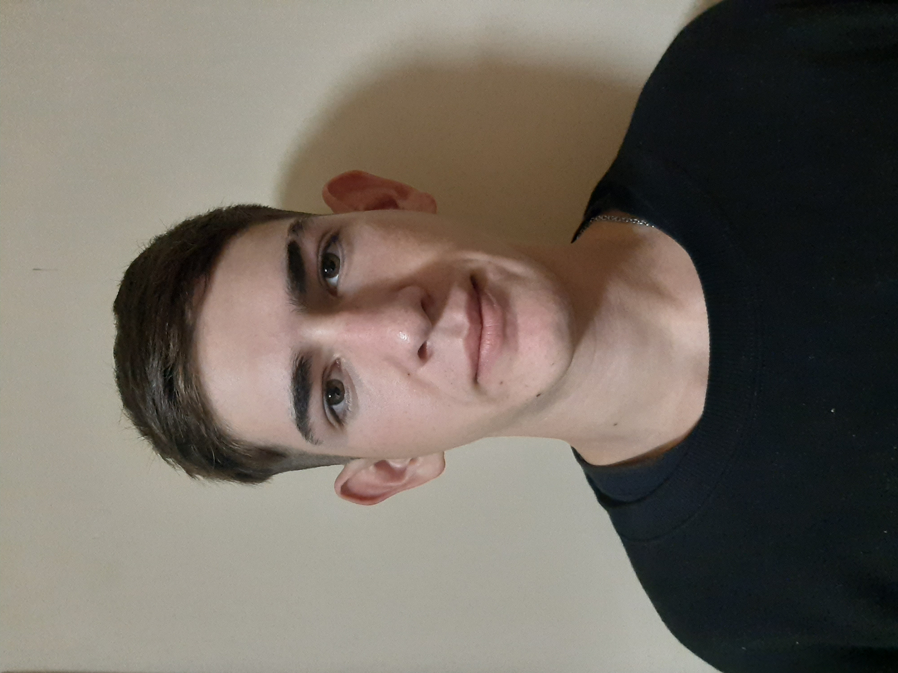

CURRICULUM VITAE
-
Nombre y Apellido
- Facundo Ezequiel Richer Casco
-
datos personales
- Edad: 20 años
- Ocupacion:programador
- Direccion: Los Andes

sobre mi
Mi objetivo principal es formar parte de un unequipo de trabajo en una empresa. y que mis logros sean reconociodos. Me considero apto para el trabajo colectivo.
estudios
- Bachiller en Economia y Administracion de Empresas - 2019 - E.E.S N°5
- programador FullStack - NUCBA - Continua.
experiencia laboral
- Mc donalds - FEB.2018 - continua.